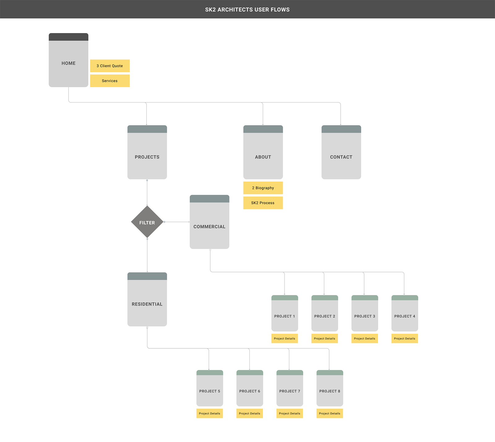
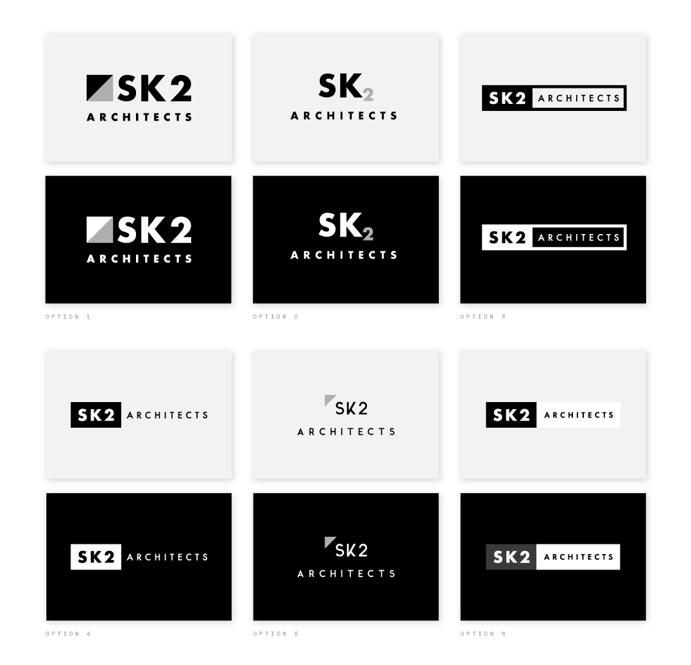
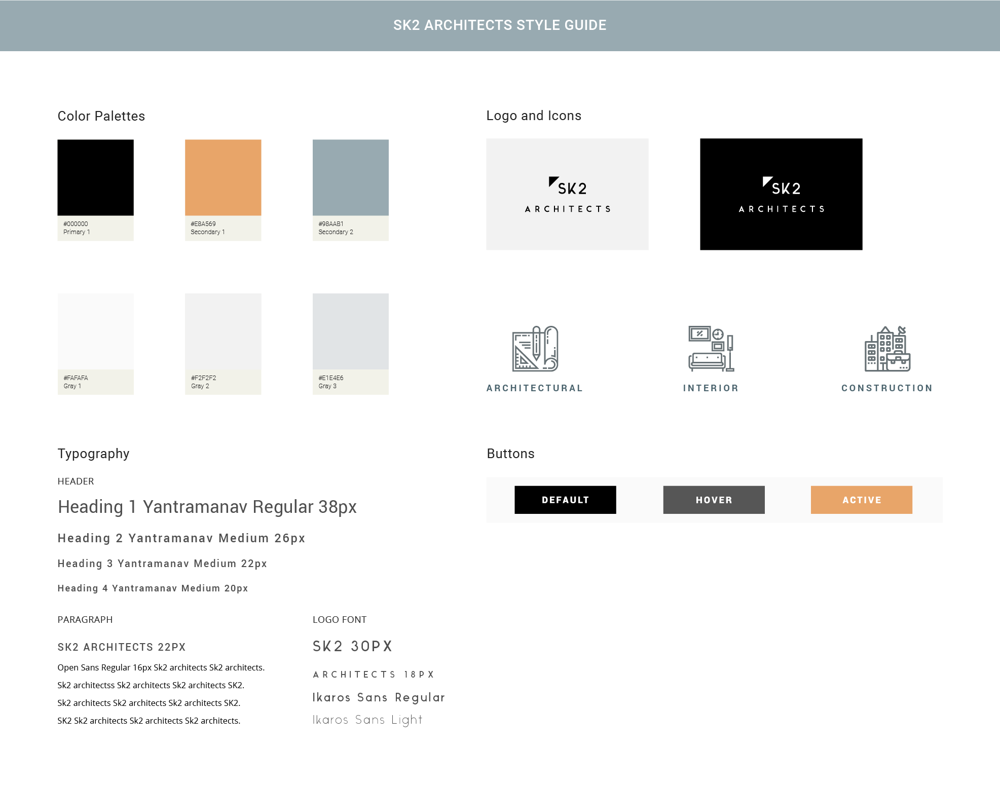
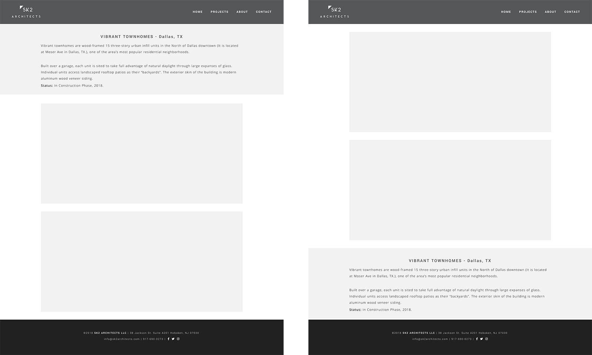
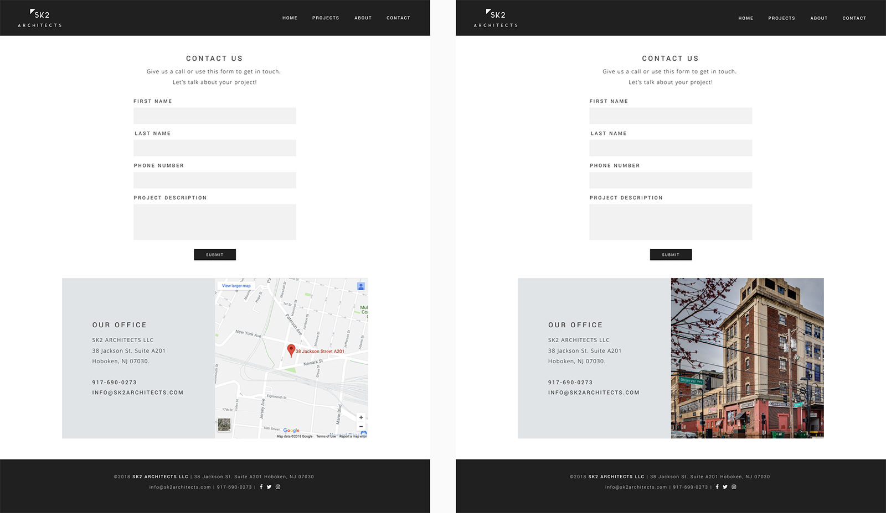
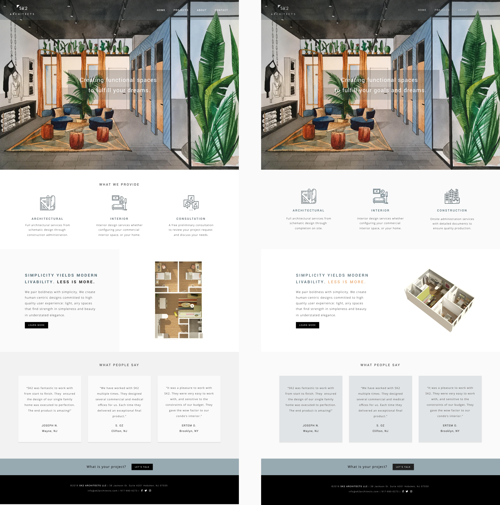

Roles
- User Research
- Content Strategy
- Brand Identity
- UX/UI Design
- Development
Deliverables
- User Surveys
- Competitive Analysis
- User Interviews/Personas
- User Stories/Flows
- Wireframes
- Visual Design/Prototype
- Usability Tests
- Responsive Site
Tools
- Adobe Illustrator
- Adobe Photoshop
- Figma
What is SK2 Architects?
SK2 Architect is an architecture firm located in Hoboken, NJ that provides residential, commercial, interior design and construction administration services. The firm hasn’t been in the business for a long time, but they have experienced architects and a solid portfolio of residential and commercial projects to showcase and grow their client base. Project Duration: 8 weeks
Problem
The firm's owners did not have time to work on their brand identity and site design so they requested my services for content strategy and direction, brand identity, website design and development. My challenge was to understand their firm's philosophy, services and requirements in order to communicate their message, to establish trust and attract potential clients.
Solution
SK2 Architects is a responsive site that allows existing and potential clients to view firm's portfolio of residential and commercial projects. Users can find out about SK2 Architects, their services, read their clients' testimonials, learn about SK2 Architects team, their process and reach out to request their services easily.
Goals
- Create a responsive site that showcases a sample of residential and commercial projects.
- Create an intuitive experience that allows users to learn about the firm, their services and the team's background to establish trust.
- Design a brand identity and a layout that is simple and modern.
- Provide an easy way for users to contact the firm.
My Approach
I dedicated sometime to understand SK2 Architects' requirements at the begining of this project-from how they do business to their likes and dislikes of other similar sites. User research and competitive analysis helped me with taking this project from concept to creating the content direction, layout, brand identity and finalizing the design with a high-fidelity prototype to translate users needs into an intuitive experience by iterating on low-fidelity wireframes.
User Research and Competitive Analysis
WHO IS OUR AUDIENCE? The majority of the survey audience consisted of individuals who worked as an architect or who had experience working with architects such as Clients, Civil Engineers, Architectural Designers, Consultants, Landscape Architects. We had a good mix of age groups that took our survey. About 31.3% of them were between the ages of 25-34, 25% of them were between the ages of 45-54 years old, 18.8% of them were between the ages of 35-44 and another 18.8% of them were between the ages of 55-64 and the remaining were between the ages of 18-24. The 68.8% of them were female and located in New York.
WHAT ARE THEIR LIKES AND DISLIKES? About 81.3% of our audience had experience with visiting an architecture firm website. What they liked about these websites were creative and innovative layouts, the galleries of completed projects. They liked seeing real project pictures with easy access to clear and concise information about them. They liked clean and modern design to match with firm’s design philosophy. What they didn’t like about these websites were seeing very similar services, products and styling with no content or visual representation to differentiate them from their competitors, not being able to view examples of different styles and their pricing for each, getting overwhelmed with too much information, poor style and lack of clear simple statements. They thought that most of these sites had too many effects that slowed down the load time and made it hard to navigate.
HOW DO THEY MAKE A DECISION AND CONTACT? About 81.3% of them wanted to see work samples and 18.8% of them wanted to see information about their process and the remaining of them wanted to see a combination of testimonials, their price structure and a way to request a price quote through their website. Most of them, about 43.8% preferred to contact the firm by submitting an online contact form, 31.3% of them preferred emailing them directly, 18.8% of them preferred calling and talking to them directly and the remaining of them wanted to submit a form to request a price quote.
HOW DO THEY ESTABLISH TRUST? Majority of our audience needed their services for Residential 31.3%, Interior 31.3% and Commercial Design 25%. About 12.5% of them needed their services for Design Consultation and the remaining needed it for Residential, Commercial and Virtual Facelifts. What they worried about was the cost 56.3% and the end results 18.8% while using their services. Majority of our audience checked their social media presence, about 68.8% to establish trust towards their business. They checked following accounts: Instagram 25%, LinkedIn 18.8%, Facebook 18.8%, Twitter 12.5%.
Derk Garlick Architects
Website: derkg.com Location: Hoboken, NJ Job Costs: $200,000 - 5 million
- They are in business since 2003 specializing in pre-property analysis, estate site development, new commercial buildings, custom homes/additions, historic properties, commercial interiors, medical and dental office design, retail design and branding, variances and legal testimony, 3D design visualization, graphic design and branding.
- They have relationships with international firms such as Aro Concepts in India.The firm has philosophy of diversity and cultural awareness as their moral guiding principle.
- They use advanced technology and computer visualization software to explain their design concepts to clients as it develops from conceptual sketches to final construction drawings.
- Their presence in press and social media: Facebook (126 Likes), Twitter (14 Followers), LinkedIn (148 Followers), Houzz (45 Followers) and 2 reviews. 3 Affiliations: NCARB, AIA New Jersey, LEED AP.
Clawson Architects
Website: clawsonarchitects.com Location: Maplewood, NJ Job Costs: $125,000 - 15 million
- They are an established firm with a great reputation. They have a portfolio of more than 450 projects. They offer following services: 3D Rendering, Architectural Design, Architectural Drawings, Attic Conversion, Basement Design, Bathroom Design, Building Design, Custom Homes, Drafting, Energy-Efficient Homes, Floor Plans, Historic Building Conservation, Home Additions, Home Extensions, Home Remodeling, Home Restoration, House Plans, Kitchen Design, Kitchen Remodeling, New Home Construction, Staircase Design, Sustainable Design, Universal Design, 3D Home Design, Remodeling.
- They have a good presence in press and social media: Facebook (1.079 Likes), Twitter (1,971 Followers), LinkedIn (500+ Followers), Houzz (1,472 Followers) and 51 reviews. Their affiliations: AIA, ICAA, APT, NKBA, CNU, USGBC, NCARB.
Plan Architecture LLC
Website: plnarc.com Location: Little Falls, NJ Job Costs: Not Specified
- They are a full-service design firm providing public, commercial and residential services. They do Feasibility Analysis, Programming, Master Planning, Interior Design, Renovation, Alterations, Additions, Bidding and Negotiation and Construction Administration.
- They describe their philosophy as delivering creative and timely client and site specific architectural solutions to unique client demands.
- There is no particular information about their firm and nothing specific to set them apart from their competitors.
- They have a good presence in social media: Instagram (6,218 Followers), Facebook (1,737 Likes), Houzz (262 Followers) and 25 reviews. They are affiliated with AIA.
What are the first impressions of their websites?
Derk Garlick Architects: They showcase 3 people on their website as a part of their team. The layout, color and the font choices make the site overwhelming and hard to follow. There are no testimonials. They have contact information such as address, phone, email along with a contact form, but the dark background color makes it hard to see the form fields.
Clawson Architects: Their site looks clean, professional and contains decent amount of content. They have dedicated pages with content about their process, their testimonials and services. They have a team of planners, designers and project managers that they represent as people who value art, architectural history, preservation, and sustainability. They showcase 2 partners and 6 team members’ profile on their website. They have content to educate their clients about understanding architectural drawings, budgeting and how to work with their team, helpful faqs. They also have a dedicated page for their blog. Their contact page contains all the necessary information along with a functional contact form. Any information that is made available about their firm including their website gives potential clients a reliable architecture firm impression.
Plan Architecture LLC: Their site has dedicated sections with New Residence, Additions/Renovations, Commercial projects posted with images and project details. Their “Who We Are” page contains owner’s and main architect’s background, but there is no information about his team and his process. There is no contact form on their contact page, but all the necessary contact information is provided.
Key Takeaways
- Users and firm's owners liked websites that showcased real project pictures with easy access to clear and concise information about them. They liked clean and modern design to match with firm’s design philosophy. I will make sure my design matches with SK2 Architects design philosophy and contains clear content about their projects. I will have a simple design and avoid using complex effects that may impact the navigation and the site performance.
- They mentioned the importance of seeing work samples and information about their process so my design and the content will include them. Since majority of our potential users wanted to submit an online contact form or easy access to firm's contact information to email or call them directly to reach out, my design will include these elements.
- Since majority of our audience checked the firm's social media presence to establish trust towards their business I decided to request the site owners to create their social media accounts to include links to them in my design. I found out that they already had presence on social media, but under a different name upon rasing this question so they decided to update their existing accounts with SK2 Architects name. I suggested them to use the same branding on these accounts and make it consistent with their site.
User Stories and User Flows
Based on the key takeaways I documented the user stories as listed below.
- As a user I want to view information about SK2 Architects services.
- As a user I want to view SK2 Architects project samples with images and project details.
- As a user I want to view SK2 Architects client testimonials.
- As a user I want to view SK2 Architects design process and gain understanding of their design philosophy.
- As a user I want to view SK2 Architects team members biography and background information.
- As a user I want to view SK2 Architects social media accounts.
- As a user I want to view SK2 Architects contact information and/or submit an online contact form.
I created the basic site structure for SK2 Architects as shown below and I shared it with firm's owners to get on an agreement with them in terms of the number of pages and the potential content to display on each page.
Discovering Design Requirements
Firm's owners mentioned that they wanted a modern design. I created and shared 3 Moodboards with them and raised the following questions to understand what type of modern site they are envisioning for their site: 1. Green, serious and modern, 2. Luxury, prestige, elegance and modern, 3. Minimalist, clean, simple and modern
- What do you like about each moodboard?
- Which moodboard do you like the most and why?
- Is there anything in any of these boards that you don't like at all?
They picked the Minimalist moodboard. They didn't like Modern Elegance from Luxury, Prestige, Elegance and Modern moodboard. They didn't like the colors from Green, Serious and Modern moodboard, but they liked Heaton Group and Kayli logo designs. They liked Faller Buildings website from Minimalist, Clean, Simple and Modern and they also liked the colors and the simplicity of the designs on that moodboard.
Branding and Style Guide
Firm's owners were open to the idea of text with graphic for their logo, but they indicated that most similar firms had a text only logo. I created a number of potential logo options in Illustrator, created 2 seperate logo preference tests via UsabilityHub and post them on different channels. Based on the first preference test results the 3 most liked logo designs display below: 25% picked option 1, 25% picked option 2, 25% picked option 3. Based on the second preference test results the 3 most liked logo designs display below: 33% picked option 4, 27% picked option 5, 13% picked option 6. See test results no.1, See test results no.2
The triangle shape in option 5 communicated the concept of an architecture and most liked by firm's owners. As a result of the user research and the site owners moodboard choices I decided to use a settled color palette for SK2 Architects. The goal was to allow the images to drive the overall color schema for their site.
Low Fidelity Wireframes
I created the low fidelity wireframes for home, projects, project details, about and contact pages in Figma according to user research results, site structure and content placement. I intentionally kept the layout simple.

High Fidelity Wireframes
I updated the low-fidelity wireframes with the site content that was provided by firm's owners. I created the high-fidelity wireframes by incorporating fonts, logo and icons based on the style guide that I created for SK2 Architects brand.

Project Details Page
Users suggested having the project details content after the images. I performed a preference test via UsabilityHub. The audience thought that the content could be placed either way, but about 69% preferred to see the content before the images. I decided to keep the content at top before the images. I beleive that having the projet details at top gives the necessary context to the images. See test results
Contact Page
Users suggested having a map for the office location on contact page. The firm's owners wanted to have their office building photo to display instead of the map. I performed a preference test via UsabilityHub. The audience thought that either options were acceptable, about 56% preferred the map. Since the preference was not statistically different between them I decided to go with firm's owners decision. See test results
Home Page
Users preferred the home page with the 3d image instead of 2d. They also suggested using different hero images. I performed a preference test with different hero images, I used the 3d image and replaced the consultation icon/text for provided services section with construction services as per firm's owners request.
Based on the test results about 45% of the audience preffered the image with the modern condo interior design. The illustration image followed that with 27%. The site owners preferred to use the illustration/drawing image as their site's hero image. They would like to do more commercial work than residential. They thought the illustration image was a better representation of the type of work that they'd like to continue to do as a firm. See test results

Mockups
I suggested firm's owners to share the prototype with their architect friends and co-workers. Based on their feedback I made content edits and minor layout changes. Below you can see the finalized mockups. The final version also includes some additions like "Let's Talk" button on home page, "back to projects" and "next project" links on project details page to improve the overall user experience.

Final Thoughts
Firm's owners loved the final design. I used CSS Grid layout combined with Flexbox for the structure of the site, and Javascript for the filters on the projects page. They were excited to see the site live. One of the biggest challanges during this project was that they did not have time to write the content and gather the images. There was a delay in receiving them. As a result, I had to make quite a few revisions in my design as they provided the materials. I learned that it was necessary to define some hard deadlines for content and images at the begining of the project in order to receive them timely. Having the content and the images available earlier in the process allows making better design decisions.